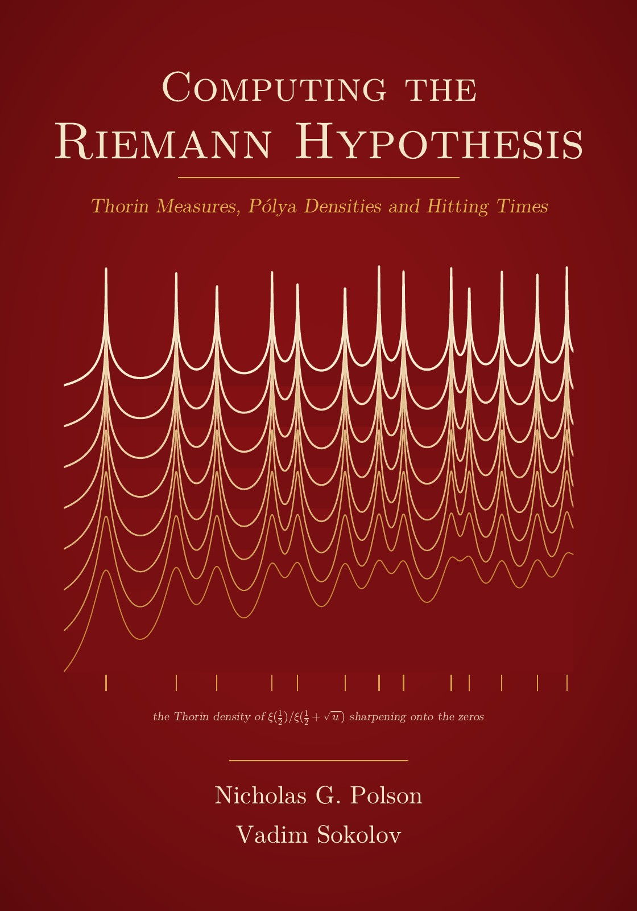

Computing the Riemann Hypothesis Thorin Measures, Pólya Densities and Hitting Times
By Nicholas G. Polson and Vadim Sokolov.


Description
The Riemann Hypothesis can be restated as the positivity of a measure, the Thorin measure of a ratio of values of Riemann’s Xi function. This book computes that measure from Pólya’s integral for Xi, without primes or a list of zeros, in certified ball arithmetic, and asks what such computations can and cannot teach about the zeros.
A certified zero off the critical line would refute the hypothesis, but no finite computation can prove it. From the zeros verified up to height 3 × 10^12 the book certifies that the derivatives of the heat trace have the predicted signs up to order 1.16 × 10^25, and proves that such finite positivity tests cannot settle it: a perturbation of Xi with the same zeros below a large height, and zeros off the line above it, passes them. No proof of the hypothesis is claimed.
New results: the reciprocal Xi function at x to the power p is hyperbolically completely monotone exactly when the absolute value of p is at most one minus twice the largest zero angle over pi; at the basepoint one the Thorin density is certified smallest at the origin, so the shifted clock is a stable variable plus a generalized gamma convolution; between the basepoints one half and one the shifted clocks are almost generalized gamma convolutions, unconditionally; the clock of Pólya’s Bessel function is the hitting time of an explicit diffusion; adjacent real zeros of a polynomial cannot meet under the backward heat flow before an explicit time; and the Pólya law lies within 2 × 10^-6 in total variation of the ferromagnetic laws of Lee and Yang, a distance that is zero exactly under the hypothesis.
Later chapters read the programme through Pólya’s papers on the zeros of entire functions (the Pólya Schur form of the hypothesis, Turán inequalities, a certificate that the two sided reciprocal Xi density is log concave and lies within 1.6 × 10^-10 of a Pólya frequency function of every order), Yoshida’s Hermitian form of Weil’s explicit formula and Zhu’s compact windows (a damped Weil criterion, least eigenvalues and an uncertainty barrier), and Dedekind zeta functions and the Linnik constant. The October 2026 claims of a zero free half plane Re s > 7/8 for all L functions, and the later preprints that lower the constant slightly, are not refereed: the book states only conditional consequences (a principal signal for zeta, the sliver and Mertens estimate, the Thorin property at every basepoint above 7/8), credited to their authors.
The scripts and data files behind the tables and figures are in the book’s repository https://github.com/VadimSokolov/computing_rh, listed in code/README.md.
How to cite
Polson and Sokolov (2026), Computing the Riemann Hypothesis: Thorin Measures, Pólya Densities and Hitting Times, edition 1, https://doi.org/10.5281/zenodo.23583222.
@book{polsonsokolov2026computing_rh,
author = {Polson, Nicholas G. and Sokolov, Vadim},
title = {{Computing the Riemann Hypothesis: Thorin Measures, Pólya Densities and Hitting Times}},
year = {2026},
publisher = {Independently published},
doi = {10.5281/zenodo.23583222},
url = {https://vsokolov.org/books/computing_rh/}
}Main results
- Bosch type theorem for the reciprocal Xi function (Theorem 4.3.5, page 75): The reciprocal Xi function composed with the power x to the p is HCM exactly when the absolute value of p is at most one minus twice the largest zero angle over pi, so RH is the extreme case p equal to one.
- Derivative signs of the heat trace up to order 1.16 x 10^25 (Theorem 5.1.13, page 112): From the verification of RH to height 3 times 10^12, every derivative of the heat trace alternates in sign, equivalently the Williamson measures are positive, up to order 1.16 times 10^25, with the numerical inequalities of the proof certified in ball arithmetic.
- Biane form lower bound for the collision time of zeros under the backward heat flow (Theorem 8.4.8, page 239): While all zeros of a real polynomial stay real and simple, a gap between two adjacent zeros cannot close under the backward heat flow before the time one over the minimum of Laguerre’s quantity over the gap, a bound at least as strong as the one from the critical point and attained by z squared minus a squared.
- Clock of Pólya’s Bessel function as a hitting time of an explicit diffusion (Theorem 8.7.10, page 313): The index side clock of Pólya’s Bessel function, the GGC with Thorin atoms at the squares of the positive zeros of nu maps to K_{i nu}(2 pi), is the clock of a hitting time of a level by an explicit diffusion, planar Brownian motion killed at rate one half and Doob transformed by K_0.
- Minimum of the Thorin density at the origin and stable summand at the basepoint one (Proposition 9.1.11, page 340): With no hypothesis on the zeros, certified with the first 1800 zeros in ball arithmetic and explicit zero counts above height 2000, the Thorin density of the shifted clock at the basepoint one is smallest only at the origin, so the clock is the sum of an independent positive stable one half variable and a generalized gamma convolution.
- Almost GGC theorem for the shifted clocks (Theorem 11.4.2, page 462): With no hypothesis, for every basepoint between one half and one the Cauchy kernels of the zeros to the right of the basepoint carry a vanishing fraction of the mass of the kernels of the other zeros, with a power saving from zero density estimates.
- Total variation distance from the Pólya law to ferromagnetic laws is below two millionths, with no hypothesis (Proposition 13.4.6, page 538): With no hypothesis the total variation distance from the Pólya law to the ferromagnetic laws is below 1.932 × 10^-6 by a certified computation in ball arithmetic and below 1.266 × 10^-4 by an explicit construction, and it is zero exactly when the Riemann Hypothesis holds.
- Threshold theorem along the flow for the shifted clocks of the heat flow function (Theorem 15.2.3, page 583): For every time \(t\ge0\) and basepoint \(\alpha\ge\frac12\), the shifted clock of the heat flow function \(\xi_t\) is the Laplace transform of a generalized gamma convolution exactly when no zero of \(\xi_t\) has real part above \(\alpha\), and its Thorin measure is then an explicit sum of Cauchy kernels and atoms over the zeros.
- Phase diagram theorem, de Bruijn’s strip theorem in Thorin form (Theorem 15.3.2, page 584): The set of points \((t,\alpha)\) where the shifted clock of the heat flow function is a generalized gamma convolution is carried along parabolas by the flow (de Bruijn’s strip theorem in Thorin form), the de Bruijn Newman constant is the minimum of \(t+2(\alpha-\frac12)^2\) over it, and RH holds exactly when the corner \((0,\frac12)\) belongs to it.
- Unconditional GGC property of the reciprocal Xi function in the fourth root variable, compensated by the first power sum, with explicit Thorin density from the heat trace (Proposition 9.1.7, page 336): Unconditionally, the function \(\Psi(s)=\frac{\xi(\frac12+s^{1/4})}{\xi(\frac12)}e^{-p_1\sqrt s}\) is the Laplace transform of a generalised gamma convolution whose Thorin measure has an explicit density built from the heat trace \(W\), and under RH it equals the Weierstrass product \(\prod_{\gamma>0}(1+\sqrt s/\gamma^2)e^{-\sqrt s/\gamma^2}\).
- RH is equivalent to boundedness of the heat trace of the zeros on a vertical line (Theorem 5.1.4, page 98): The Riemann Hypothesis holds if and only if the heat trace \(v\mapsto W(\sigma+iv)\) of the zeros is bounded on the real line, for one, equivalently every, \(\sigma>0\).
- Concentration of the Laguerre expressions at the origin along the whole de Bruijn Newman flow, with positivity of \(L_{n,t}\) on every window for large \(n\) (Newton 2026, Zenodo) (Theorem 8.4.20, page 252): For the probability measures \(\mathbb{E}_{n,t}\) defining the Laguerre expressions \(L_{n,t}\) of the de Bruijn Newman function, the second moment of the centred variable tends to zero uniformly in \(0\le t\le\frac12\), so for every \(X\) the expression \(L_{n,t}(x)\) is positive on \(|x|\le X\) for all large \(n\), uniformly in \(t\) (Newton 2026, Zenodo); the index is not effective.
- RH holds if and only if the density of the clock is a Pólya frequency function of infinite order (Proposition 8.1.2, page 211): RH is equivalent to the density \(f\) of the clock being a Pólya frequency function of infinite order, the one sided form of the two sided criterion: under RH \(f\) is the density of \(\sum_\gamma e_\gamma/\gamma^2\), and conversely Schoenberg’s theorem forces \(G\) to have only real zeros.
- RH holds if and only if a freely infinitely divisible law nu_xi with free cumulant transform log xi(1/2)/xi(1/2+sqrt(-z)) exists (Proposition 11.2.4, page 442): RH holds exactly when the function \(\mathcal{C}_\xi(z)=\log\{\xi(\frac12)/\xi(\frac12+\sqrt{-z})\}\) is the free cumulant transform of a freely infinitely divisible probability measure, which under RH is \(\Lambda_{\rm BP}(\mu_0)\), with compact support, free cumulants \(m_{n-1}/n\) and free Lévy measure \(N(y^{-1/2})dy/y\).
- No reweighting of Riemann’s theta series by summable weights has infinitely many real zeros (Theorem 22.2.4, page 764): For nonzero real weights \(w_n\) with \(\sum|w_n|n^{-\sigma}<\infty\) for every \(\sigma>0\) (this includes the friable truncations), the reweighted function has finitely many real zeros and infinitely many nonreal zeros.
- Paired form: zeta has no zero to the right of alpha exactly when the real and imaginary parts of xi on the line alpha interlace (Theorem 22.13.3, page 785): For \(\alpha>\frac12\), zeta has no zero with real part at least \(\alpha\) exactly when \(E_\alpha(z)=\xi(\alpha-iz)\) is Hermite Biehler, exactly when the real and imaginary parts of \(\xi(\alpha+it)\) have only real simple strictly interlacing zeros; hence RH holds if and only if this holds for every \(\alpha>\frac12\).
All 440 results of the book (303 proved, 5 computed, 32 conditional, 95 open, 5 counterexample) are on the page Results by chapter, each with its statement, status and number.
License: Text, figures and PDF: CC BY 4.0. Code: MIT.
This page is generated from the book’s repository (main). The numbers and pages are those of the PDF, version 1.3.0.